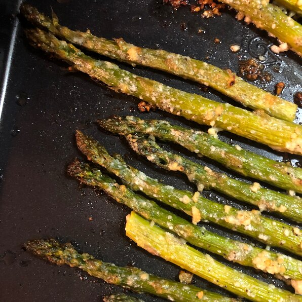

Oven-Roasted Asparagus

Description
Salty and savory, the roasting method kills the natural bitterness of asparagus.
Try it next to grilled fish or lamb.
Ingredients
- 1 Bunch Thin Asparagus Spears, Trimmed
- 3 Tablespoons Olive Oil
- 1 1/2 Tablespoons Grated Parmesan Cheese (Optional)
- 1 Clove Garlic, Minced (Optional)
- 1 Teaspoon Sea Salt
- 1/2 Tespoon Ground Black Pepper
- 1 Tablespoon Lemon Juice (Optional)
Steps
-
Preheat an oven to 425 degrees F (220 degrees C).
-
Place the asparagus into a mixing bowl, and drizzle with the olive oil.
Toss to coat the spears, then sprinkle with Parmesan cheese, garlic, salt,
and pepper. Arrange the asparagus onto a baking sheet in a single layer.
-
Bake in the preheated oven until just tender, 12 to 15 minutes depending
on thickness. Sprinkle with lemon juice just before serving.